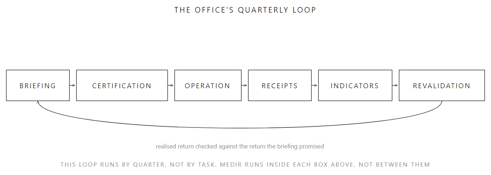

O playbook: oito templates, derivados, não inventados
As quatro partes são o argumento. Este é o kit derivado delas: oito templates operacionais, cada um rastreável até a parte e a seção que já introduziu o conceito por trás dele.
Fernando Teco Sodré · Setembro de 2026
Tradução em andamento. O conteúdo completo, em inglês, está na aba EN acima. Os oito arquivos de template abaixo já são utilizáveis em qualquer língua hoje: a maior parte dos campos é estrutural (uma classe de ação, uma data, um papel nomeado), não prosa que precise de tradução para ser preenchida corretamente.

D10 · O laço trimestral do próprio escritório, da seção de oito indicadores da Parte 4. Organiza este playbook do mesmo jeito que fecha aquela seção, uma segunda aparição legítima, não uma competindo com a outra.
Nomes, repositórios, comandos e passo a passo, organizados pelos cinco passos do MEDIR
Playbook, este
Oito templates operacionais derivados das quatro partes, abrindo com o D10
Documento complementar · Série Harness · Cada template remonta até a parte e a seção que o fundamenta, ver playbook/README.md para o índice completo.
Este projeto documenta as skills que instala e usa, como prática e não só como argumento. Lista completa e registro de uso em TOOLS.md, crescimento de palavra e token no diário de bordo.
Harness · Companion document
The playbook: eight templates, derived, not invented
The four parts are the argument. This is the toolkit derived from it: eight operational templates, each one traceable back to the part and section that already introduced its underlying concept.
Fernando Teco Sodré · September 2026
Why this exists, and why it waited
Every template below reuses something the series already argued for. None of it is a new idea competing with the four parts, and that boundary was deliberate: consolidating this playbook right after finishing the article series, on 31 August 2026, would have blurred the line between the argument and the toolkit derived from it. It stayed a named, tracked, deliberately parked item in NEXT-STEPS.md until 13 September 2026, when it was finally picked up.
Each template names, in its own file, exactly which part and section grounds it. Copy any one of them into your own project and adapt every field: these are working templates, not software, and a template filled in without judgement recreates the exact failure this whole project argues against, an artefact mistaken for the reasoning it is supposed to support.
D10 · The office's own quarterly loop, from Part 4's eight-indicators section. It organises this playbook the same way it closes that section, a second, legitimate appearance rather than a competing one.
The record that makes a certification decision reconstructible later
The last two rows are one item in this project's own tracking (NEXT-STEPS.md item 3 lists "agent-registry template and certification-meeting-minutes template" as a single bullet) but two separate files here, since a registry and a set of meeting minutes are filled in by different people, at different moments.
How these connect to each other
task-contract.md feeds skill-template.md: a skill's own task-contract section is the same fields, copied in. risk-matrix-by-tier.md and execution-receipt.md's rule-of-two block are the two independent nets Part 3 insists both run together, neither one alone. tier-diagnostic.md feeds the tier decision in rollout-path.md, which in turn feeds the tier column in agent-registry.md. certification-minutes.md is the record that sets an agent-registry row's certified date and revalidation date, and it gets run again, not a lighter version of it, at every revalidation.
starter-guides.md stands apart from that chain. It is not scoped to one task or one skill, it is the default this project itself runs with, so it is the one template meant to leave this repository entirely: copy it into a different project's own AGENTS.md or CLAUDE.md, before any of the other seven templates are filled in for that project.
Machine-readable form
Each template is registered in toolkit.json as "kind": "template", carrying the same fields the 38 installed skills already carry there: a role, the part it grounds, and its path in this repository. An agent enumerating what this project offers sees these eight artefacts alongside the installed skills, not as a separate, undiscoverable category. See AGENTS.md for the full protocol.
Honest limits
Nothing here validates that a field was filled in correctly. execution-receipt.md's JSON shape does not enforce that a cost field holds a real number rather than a guess, the same way a task contract's "done when" field is only as good as the judgement that wrote it. These templates make the right question harder to skip. They do not answer it for you.
Translation into Portuguese and Spanish for this page is in progress. The template files themselves are usable in any language today: most of their fields are structural (a class of action, a date, a named role), not prose that needs translating to be filled in correctly.
Names, repositories, commands and step-by-step guides, organised by the five steps of MEDIR
Playbook, this one
Eight operational templates derived from the four parts, opening with D10
Companion document · Harness series · Every template traces back to the part and section that grounds it, see playbook/README.md for the full index.
This project documents the skills it installs and uses, as practice and not only as argument. Full list and usage log in TOOLS.md, token and word growth in the project log.
Harness · Documento complementario
El playbook: ocho templates, derivados, no inventados
Las cuatro partes son el argumento. Este es el kit derivado de ellas: ocho templates operativos, cada uno rastreable hasta la parte y la sección que ya introdujo el concepto detrás de él.
Fernando Teco Sodré · Septiembre de 2026
Traducción en curso. El contenido completo, en inglés, está en la pestaña EN de arriba. Los ocho archivos de template de abajo ya son utilizables en cualquier idioma hoy: la mayoría de sus campos son estructurales (una clase de acción, una fecha, un rol nombrado), no prosa que necesite traducción para llenarse correctamente.
D10 · El bucle trimestral de la propia oficina, de la sección de ocho indicadores de la Parte 4. Organiza este playbook del mismo modo que cierra esa sección, una segunda aparición legítima, no una que compite con la otra.
Nombres, repositorios, comandos y guías paso a paso, organizados por los cinco pasos del MEDIR
Playbook, este
Ocho templates operativos derivados de las cuatro partes, abriendo con el D10
Documento complementario · Serie Harness · Cada template remonta hasta la parte y la sección que lo fundamenta, ver playbook/README.md para el índice completo.
Este proyecto documenta las skills que instala y usa, como práctica y no solo como argumento. Lista completa y registro de uso en TOOLS.md, crecimiento de palabras y tokens en el diario de bitácora.